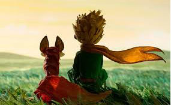

A León Werth
Pido perdón a los niños por haber dedicado este libro a una persona mayor.
Tengo una muy seria disculpa: esta persona mayor es el mejor amigo que tengo en el mundo.
Tengo otra disculpa: Esta persona mayor es capaz de comprender todo,
hasta los libros para niños. Y tengo aún una tercera disculpa:
Esta persona mayor vive en Francia donde siente hambre, frío y tiene gran necesidad de ser
consolada.
Más si todas estas disculpas no fueran suficientes, quiero entonces dedicar este
libro al niño que fue, en otro tiempo, esta persona mayor. Todas las personas mayores han
comenzado por ser niños (aunque pocas lo recuerden).
Corrijo entonces mi dedicatoria:
A León Werth cuando era niño
 Yo lo hice mi amigo y ahora es único en el mundo
Para saber más sobre este libro: Pulsa aquí
Descarga el libro: El principito.pdf